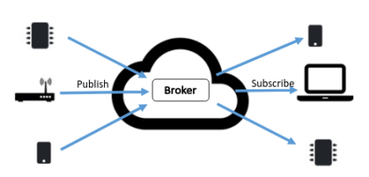

Use HTTP and MQTT to connect a device
You will use the Raspberry Pi as our sensor device to publish temperature, pressure and humidity data. It will send a current value of every sensor to a MQTT broker. There are many public MQTT brokers (you can set up your own). In this lab you can choose one of the following public brokers.
It is up to you which one you choose for the lab - perhaps try a few of them! As they are public brokers there is no guarantee of service (personally I found broker.hivemq.com slow). If you wish to have some reassurance of performance and authentication, there are several services available that offer a free tier such as cloudmqtt.

Run the following to make sure your RPi libraries are up to date:
sudo apt-get updateYou will use the Eclipse Paho Python client library to create a publish and subscribe program as shown in the above diagram. Run the following command in the RPi To install the relevant libraries on the RPi:
sudo apt-get install mosquittosudo pip install paho-mqttYou will need to install the relevant SenseHAT Python libraries. Run the following command in the RPi To install the relevant libraries on the RPi:
sudo apt-get install sense-hatmqtt in your home directory and cd into it:mkdir ~/mqtt
cd mqttclient_pub.py and enter the following code:import paho.mqtt.client as mqtt
import urlparse
import sys
import time
import json
from sense_hat import SenseHat
sense = SenseHat()
sense.clear()
# Define event callbacks
def on_connect(client, userdata, flags, rc):
print("Connection Result: " + str(rc))
def on_publish(client, obj, mid):
print("Message ID: " + str(mid))
mqttc = mqtt.Client()
# Assign event callbacks
mqttc.on_connect = on_connect
mqttc.on_publish = on_publish
# parse mqtt url for connection details
url_str = sys.argv[1]
print(url_str)
url = urlparse.urlparse(url_str)
base_topic = url.path[1:]
# Connect
if (url.username):
mqttc.username_pw_set(url.username, url.password)
mqttc.connect(url.hostname, url.port)
mqttc.loop_start()
# Publish a message to temp every 15 seconds
while True:
temp=round(sense.get_temperature(),2)
temp_json=json.dumps({"temperature":temp, "timestamp":time.time()})
mqttc.publish(base_topic+"/temperature", temp_json)
time.sleep(15)mqtt://iot.eclipse.org:1883/YOUR_ID/home where you replace YOUR_ID in the URL with a memorable id of your choice (For example, I use my Github username, fxwalsh, so my URL is : mqtt://iot.eclipse.org:1883/fxwalsh/home).python client_pub.py mqtt://iot.eclipse.org:1883/YOUR_ID/home and you should see an output to the console similar to the following:mqtt://iot.eclipse.org:1883/fxwalsh/home
Message ID: 1
Connection Result: 0
Message ID: 2
Message ID: 3
Message ID: 4The Message ID: ... indicates on_publish callback and is called every time a value is publuished to the broker. Connection Result: 0 is output from the on_connect callback and 0 is success but any other number indicates a refused connection. For a more detailed explaination see: Paho Callbacks.
Your RPi is now hopefully publishing temperature messages to the cloud MQTT broker. Any device can now subscribe and use this data.
NOTE: Leave this program running for the next section
Ideally you can create the following program on another computer/device that can run Python but, if you only have the RPi, or just for convenience, it's OK to run the following subscribe program on the RPi also(just pretend it's on another device somewhere else in the world!).
mqtt. mqtt directory, create a new Python program file called client_sub.py with the following content:import paho.mqtt.client as mqtt
import urlparse
import sys
# Define event callbacks
def on_connect(client, userdata, flags, rc):
print("Connection Result: " + str(rc))
def on_message(client, obj, msg):
print("Topic:"+msg.topic + ",Payload:" + str(msg.payload))
def on_subscribe(client, obj, mid, granted_qos):
print("Subscribed, QOS granted: "+ str(granted_qos))
mqttc = mqtt.Client()
# Assign event callbacks
mqttc.on_message = on_message
mqttc.on_connect = on_connect
mqttc.on_subscribe = on_subscribe
# parse mqtt url for connection details
url_str = sys.argv[1]
url = urlparse.urlparse(url_str)
base_topic = url.path[1:]
# Connect
if (url.username):
mqttc.username_pw_set(url.username, url.password)
mqttc.connect(url.hostname, url.port)
# Start subscribe, with QoS level 0
mqttc.subscribe(base_topic+"/#", 0)
mqttc.loop_forever()
# Continue the network loop, exit when an error occurs
rc = 0
while rc == 0:
rc = mqttc.loop()
print("rc: " + str(rc))Connection Result: 0
Subscribed, QOS granted: (0,)
Topic:fxwalsh/home/temperature,Payload:{"timestamp": 1541453620.862879, "temperature": 34.48}
Topic:fxwalsh/home/temperature,Payload:{"timestamp": 1541453680.936523, "temperature": 34.41}You now have a working MQTT publisher/subscriber!
The SenseHAT on the RPi has a few other environment sensors, for example pressure and humidity. If you presume to operate the RPi as a weather station, you need to publish this data also and create a suiable channel structure for MQTT.
+ On the RPi, stop client_pub.py by entering ctrl + c in the terminal window.
+ On the RPi, create a new script in ~/mqtt called client_pub_mult.py with the following content:
import paho.mqtt.client as mqtt
import paho.mqtt.publish as publish
import urlparse
import sys
import time
import json
from sense_hat import SenseHat
sense = SenseHat()
sense.clear()
# parse mqtt url for connection details
url_str = sys.argv[1]
print(url_str)
url = urlparse.urlparse(url_str)
base_topic = url.path[1:]
auth=None
# Connect
if (url.username):
auth = {'username':url.username, 'password':url.password}
# Publish a message
while True:
temp=round(sense.get_temperature(),2)
humidity=sense.get_humidity()
#Create JSON strings
temp_sensor=json.dumps({"temperature":temp, "timestamp":time.time()})
humidity_sensor=json.dumps({"humidity":humidity, , "timestamp":time.time()})
#Create array of MQTT messages
temp_msg={'topic': base_topic +"/temperature", 'payload':temp_sensor}
hum_msg={'topic':base_topic +"/humidity", 'payload':humidity_sensor}
msgs=[temp_msg,hum_msg]
#Publish array of messages
publish.multiple(msgs, hostname=url.hostname, port=url.port, auth=auth)
print("published")
time.sleep(15)This time the program uses the publish.mutliple() function to send a list topics and payloads.
/pressure.(hint: use sensor.get_pressure() to get the pressure value). All going well, you should observe output from the program similar to the following:Topic:fxwalsh/home/temp,Payload:{'temperature': 34.7}
Topic:fxwalsh/home/humidity,Payload:{'humidity': 48.56332015991211}
Topic:fxwalsh/home/pressure,Payload:{'pressure': 1022.30786133}
Topic:fxwalsh/home/temp,Payload:{'temperature': 34.74}
Topic:fxwalsh/home/humidity,Payload:{'humidity': 48.578670501708984}
Topic:fxwalsh/home/pressure,Payload:{'pressure': 1022.31079102}How many bytes are you using for the payload in each message at the moment? Payloads should be kept small as possible if only to be fair to others that use the Internet! In your report, suggest ways to reduce the size of the payload, for example:
{"Temperature": 20.635 }
24 bytes
{“t”:20.63}
11 bytesHow small could you make the temperature message?(hint: MQTT does not mandate the use of JSON and do you really need the "t")
At the moment you are publishing to 3 topics. In your report suggest a justification, if any, to do this. Furthermore, demonstrate with code, how you could combine temperature, pressure and humidity in one JSON message.
You are producing data, but it's not persisted as of yet. You may need to access historical data at a later data for various reasons such as analytics, functional or regulatory reasons. Some online MQTT brokers offer a window of historical data but will probably lack the ability to extensively query the data. In this section you will now build a simple data acquisition device to persist your data both locally and remotely and use Web APIs to access that data. MQTT is now "moving" the data from a temperature sensor to a message broker. We can now write a data auisition program to move that data into a DB.
Lets assume that your RPi will also function as your DB host. For this you can use a JSON-based database called TinyDB. You will do this on the RPi for now but in a real world scenario the DB would probably exiest be on another server or cloud based service.
pip install TinyDBWe'll create a separate MQTT subscription to persist our data and populate the database
client_sub.py called persist_sub.py and open it in an editor.Change the code in persist_sub_py as follows:
<<<<<<< HEAD
>>>>>>> b6448529a7c5e7c377122710303456c0ac5a0729
from tinydb import TinyDB, Query
db = TinyDB('db.json')...
# Start subscribe, with QoS level 0
mqttc.subscribe(base_topic+"/temperature", 0)
...on_message callback function with the following to insert the JSON into the DB: print("Insering into DB: "+msg.payload)
<<<<<<< HEAD
msg_json=json.loads(msg.payload)
db.insert(msg_json)
=======
db.insert(msg.payload)
>>>>>>> b6448529a7c5e7c377122710303456c0ac5a0729Now run persist_sub.py. Any temperature data published will now be persisted to the DB.
If it's not still running, run ``client_pub.py'' program on the RPi again and leave it generate some temperature messages.
db.json in a text editor. You should see messages beginning to be the persisted in the file similar to the following:{"_default": {"1": {"timestamp": 1541234209.524762, "temperature": "18.77"}, "2": {"timestamp": 1541234224.785746, "temperature": "18.77"},Lets say you want to analyse the data to find the following:
You can do this both programatically and using the Python console as follows
In the same directory as the db.json file, start the Python console by typing python in a terminal window.
Type the following commands
>>> from tinydb import TinyDB, Query
>>> db = TinyDB('db.json')List all items in the db:
>>> for item in db:
... print(item)
... (HIT RETURN ON THIS LINE!)
{u'timestamp': 1541453440.878712, u'temperature': 34.67}
{u'timestamp': 1541453455.783444, u'temperature': 34.5}
{u'timestamp': 1541453470.80211, u'temperature': 34.54}
{u'timestamp': 1541453485.814092, u'temperature': 34.63}
{u'timestamp': 1541453500.839073, u'temperature': 34.61}
{u'timestamp': 1541453515.855052, u'temperature': 34.76}
{u'timestamp': 1541453530.868686, u'temperature': 34.74}
{u'timestamp': 1541453545.887301, u'temperature': 34.5}Find all occurrences of temperature less than 34.5:
>>> Temp = Query()
>>> db.search(Temp.temperature < 34.5)
[{u'temperature': 33.93}, {u'temperature': 33.84}, {u'temperature': 33.84}, {u'temperature': 33.84}, {u'temperature': 33.97}, {u'temperature': 33.86}, {u'temperature': 33.7}, {u'temperature': 34.06}, {u'temperat.....
>>>from tinydb import TinyDB, Query
db = TinyDB('db.json')
## get a list of temps from the DB
temps = [float(item['temperature']) for item in db]
print(min(temps))
print(max(temps))
print(sum(temps)/len(temps))Lets assume you wish to make the temperature data available via a web API. This might be useful for weather station dashboard or other applications, both current and in the future, that need access to the data.
pip install flaskflask-cors library. Although not used in this lab, it would be useful if you use this API in another web application/web site.pip install -U flask-corsFlask is a web framework written in Python that allow you, among other things, to implement web APIs.
temp_db_data.py that exposes the functions that do simple analysis on the data:from tinydb import TinyDB, Query
import time,datetime
db = TinyDB('db.json')
temps = [float(item['temperature']) for item in db]
def min_temp():
return min(temps)
def max_temp():
return max(temps)
def mean_temp():
return sum(temps)/len(temps)
def temp_items(start,end):
temps = Query()
return db.search((temps.timestamp >= start) & (temps.timestamp <= end))You will create an API according to the following design:
sense_api.py that exposes the above module functions as a web API :from flask import Flask, request
from flask_cors import CORS
import temp_db_data
from sense_hat import SenseHat
sense = SenseHat()
#clear sensehat and intialise light_state
sense.clear()
app = Flask(__name__)
CORS(app)
@app.route('/sensehat/temp',methods=['GET'])
def current_temp():
temp=round(sense.get_temperature(),2)
return str(temp)
@app.route('/sensehat/temp/<metric>',methods=['GET'])
def temp_metric(metric):
if (metric== "mean"):
return str(temp_db_data.mean_temp())
if (metric== "max"):
return str(temp_db_data.max_temp())
if (metric== "min"):
return str(temp_db_data.min_temp())
return "Metric not found"
@app.route('/sensehat/light',methods=['POST'])
def light_post():
state=request.args.get('state')
print (state)
if (state=="on"):
sense.clear(255,255,255)
return '{"state":"on"}'
else:
sense.clear(0,0,0)
return '{"state":"off"}'
@app.route('/sensehat/light',methods=['GET'])
def light_get():
#check top left pixel value(==0 - off, >0 - on)
print(sense.get_pixel(0, 0))
if sense.get_pixel(0, 0)[0] == 0:
return '{"state":"off"}'
else:
return '{"state":"on"}'
if __name__ == "__main__":
app.run(host='0.0.0.0', port=5000, debug=True)Finally, configure Flask to use your service and run it by entering the following commands at the command line(**Note: this is for Unix/RPi):
FLASK_APP=hello.py
python temp_api.pyThis will start the HTTP server on port 5000. You should now be able to access the API using HTTP.
You can use Curl to check if the API is responding.
ifconfig commandCurl GET to request the URL resource you want...curl http://YOUR_PI_IP:5000/sensehat/tempcurl http://YOUR_PI_IP:5000/sensehat/temp/mean+Now try getting minimum and maximum recorded temperature by requesting sensehat/temp/min and sensehat/temp/max
HTTP POST request to /sensehat/light with the query string state=on as follows:curl -X POST http://YOUR_PI_IP:5000/sensehat/light?state=onstate=offcurl -X POST http://YOUR_PI_IP:5000/sensehat/light?state=off